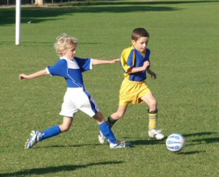
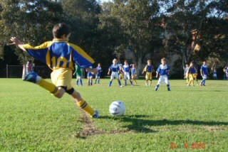
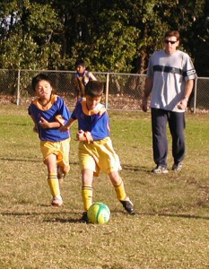
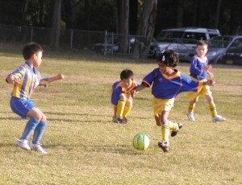
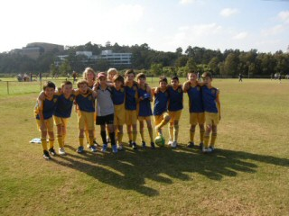
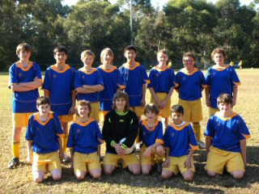
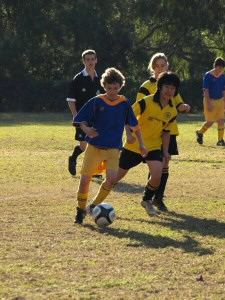

| Match Report - 24 May 2008 |
|
|
|
|
|
|
|
| U6 Red B |
North Ryde 2 - Ryde Saints United 5

|
|
|
|
Another great day for soccer today! Unfortunately the coach was still
coming to terms with the QLD loss Wednesday night, but that had no effect
on the team. From the opening whistle, the Saints came out hard and fast and
had us on our back foot early. Through some strong defence from Alex, Arlen
and Troy, we regained our composure pretty quickly and got down to some good soccer.
This week Aden and Zoe played forward, and both showed improvement in the
dribbling and passing departments. The Saints were showing some fancy
footwork, but our focus on the ball bought them unstuck a number of times.
This opened up the chances for Alex and Arlen push the ball up field and
create opportunities for goals. Troy was kept busy in the backline this week,
with the Saints attack coming fast. His strong tackling made sure the Saints
goals were hard to get, plus Arlen played back to help when needed.
Well done again team!
Best Team Work Award: Arlen
Best Ball Skills: Alex C
- Rob Wylie (Coach)
|
|
|
|
|
|
This Round 7 encounter had a little of everything, some skillful individual
play, terrific sportsmanship, and some wonderful teamwork from the Koalas.
At one stage it looked like we did not have an opponent on the day, however,
Northern HFC turned up, albeit one player short. Our coach, manager and even
some of the parents could not get our substitute player to play on the
opposition team no matter how hard they tried... these Koalas are North Ryde
through and through!
All credit to Northern HFC for the way they took the game to our guys early
on but it was only a matter of time that all the hard work at training and
the lessons learnt from coach Gary, would start to pay off. The usual
suspects, Jarvis and Charlie were once again superb with their all-round
skill and athleticism causing our opponents continuous problems. Lioda once
again showed why she has been the recipient of two previous match awards with
another strong display both on and off the ball. The feature of this game was
the amazing improvement in some of our other players such as Daniel, Jack and
Jaiden. Daniel played his best game of the season so far, often having scoring
opportunities only to be denied by a bad bounce or desperate on the line
defence. Jack was really fantastic and his great game was capped off by a
'Ronaldo' type goal from a clever corner kick by Jarvis. The joy on his face
from scoring the goal was priceless.
Our Player of the Match was Jaiden. He has certainly developed a bag of
tricks over the past few matches, often performing pull-backs in tough
situations but just to show that he isn't a one trick pony, Jaiden performed
an amazing two leg flick-up that brought a sigh (and a few laughs) from the
spectators. More impressive was his description of his new 'move' when he
was substituted not long after that.
I guess the most noticeable improvement in our Koalas is the desire to want
to pass the ball to their team mates. A few of our goals were scored from
passing to players in better positions and this is really encouraging as it
typifies what team work is all about and also shows that the players are
really taking in what Gary (coach) is teaching them. As a sidelight to this
I heard an interesting conversation on my way back to the car after the game
where Jarvis asked Daniel how many goals he had scored with the answer being
none. Jarvis's reply was 'well it doesn't matter because setting up goals is
more important than scoring them sometimes'... great thing to hear from a
seven year old!
- Paul Bonaventura
|
|
|
|
|
|
It was a beautiful morning to play soccer. Putney kicked off at the start,
but Hayley got the ball and passed it to Daniel. Daniel moved the ball to
Connor but Putney tackled him and went on to score a goal. After this our
team was warmed up and started to work really hard. Hugh gave a long-range
kick to Stephen who carried the ball forward but he too was tackled by Putney
who went on to score another goal.
But still our team kept working hard, and in the second half they started to
show their real power. After just 90 seconds Daniel scored our first goal and
everyone cheered! (It must have been the half-time oranges that gave them the
extra energy). The team was thrilled with the goal and they were sprawled on
the field doing the 'dead cocky' thing. The game went on, and our super
tackler Coedie put in a few amazing tackles. Hayley kept on chasing the ball
and ran extremely hard towards the Putney goals but was tackled just before
she was able to score. And then Coedie came in with another stupendous tackle
and got the ball out to Hugh. Hugh gave a another long kick which Stephen was
able to pick up and go on to score another goal for the team! (cue 'dead
cocky' again).
This was a great game for our team!
- Michael Park
|
|
|
| U8 - Blue |
North Ryde 2 - Eastwood St Andrews 2

|
|
|
|

Another lovely autumn morning and this time, thankfully, a little closer
to home. It would seem that coming back from a two goal deficit is our
match-plan these days. For the past two weeks we've gotten off to a slow
start and then finished over the top of our opponents. Eastwood had some
very talented players out there on Saturday and we certainly more than
matched them.

Passing and dribbling was excellent with Adam, Shannon, Charlie, David,
Tom H and Eli all excelling there and the composure of Tom H in defence
was excellent also. Patrick kept goal very safely in the first half and
showed his skills with the ball at his feet in the second. Christopher and
Tom O tackled well and chased all day.
Adam's corner kicks were a feature and Charlie's throw-ins & switching to
the centre were excellent. Shannon showed us his speed many times when running
to goal. Eli & David were eager to help up front and at the back. A very good
all-round team effort I thought.
Great to see you all enjoying yourselves and showing all the skills learned
at training.
See you all on Saturday when we visit Perth (Kenthurst actually, but it seems
like Perth. Take a cut lunch)
- Tony Borg (Coach)
|
|
|
|
|
|

What lovely weather for our second win of the season, 2-1 over Thornleigh.
Oscar had two shots on goal and was fired up in attack. Matthew also scored
his first goal for the season. Allan (Dad/Coach) did not have a chance to
capture that moment. Congratulations to both players. We wished that Mitchell
and Satya could have joined the game to share the happiness.
The Player of the Week was Jerry, who showed excellent skills controlling the
ball and was not afraid of defending a bigger opposition player. Good on you.

Both Thomas and Matthew had outstanding long shots during the game. Amazing
Thomas nearly scored a goal from the halfway line, missing by less than half
a metre. Matthew also supported the goalie and it made the difference. The
partnership developing between Oscar & Rhea is good sign, and Ryan also
showed strong support for Sam & Rhea.
Keep the winning spirit

- Mandy Van
|
|
|
|
|
|
James Henty? Who was he? Depending upon which Google hit you believe, he
was a 19th century English migrant who took a liking to Western Australian
Farming, Victorian & Tasmanian politics and ended up running a Merchants
company in Melbourne. Why this picturesque ground in the Hornsby Shire is
named after him is beyond this writer's bank of knowledge.
The game today was very even and we had plenty of chances to take the
honours. West Pennant Hills just took their chances and we were a little
under-staffed. Special thanks to Rhea and
Thomas from U8 Green for coming to our rescue -
they were inspirational.
Today the players were seeing how much better it is if they keep their
positions and to remember where they should be on the field during the game.
Throwing the ball down the line quickly is
also a great way to get a good advantage over the other team.
Luke was very brave in goals saving many shots with
some great dives and was seeing how much easier it is if you use your hands
while goalkeeping! The panel of judges had no hesitation in awarding him the
player of the match award. Maggie was very
courageous in running up front despite taking a few heavy knocks. The judges
saw that encouraging brave play was a worthy component in deciding that she
would be awarded the encouragement award this week!
We look forward to seeing all the players back from their sick beds bright
and early next week for another round of fun on the soccer field with your
grand companions.
- Andrew Curdie (Coach)
|
|
|
|
|
|

Well, the boys turned the corner! It was a great game to watch. NRS applied
the pressure on Putney in the first couple of minutes into the game. However,
Putney took possession of the ball and attacked our goal, scoring in the
first 5 minutes. NRS had a strong chance of an equalizer drawn from a great
pass from Isaac to Josh and then Ryan but didn't make it past the defenders.
This certainly gave NRS team a boost of confidence which was reinforced at
the half time briefing. Putney were notably concerned at the low score and
in this respect the NRS team deserves to be commended for their performance.
Possession of the ball was around 50/50, another credit to the boys.
Overall, the NRS team played well with good passing, defending and tackling.
Despite not scoring, this would rate as our finest performance for the season
thus far.
- Lesley Campbell (Manager)
|
|
|
|
|
|
On the 24th of May 2008 the North Ryde Nitros played Saints United in a
game of club soccer at Meadowbank Park [oval number 3]. The outcome of the
match was 3-3 and it was an outstanding game to watch. In the first half a
wide awake SU [Saints United] caught a sleepy NR [North Ryde] napping and
managed to break through the NR defences and score a good goal. Score 1-0.
Then suddenly the striker from SU broke the NR defences again to score another
great goal. Score 2-0. NR had to come back.
The players of NR were getting hungrier for a goal. NR kicked-off again and
were in possession. Zac took the ball upfield and bam! Goal. Score 2-1. NR's
confidence had risen. Then Ellia ran up the wing to the goal mouth and boom!
Ellia scored to draw level at 2-2. The whistle blew for half time and Paul
gave the team a brief word.
In the second half the ball moved back and forth up the field until the SU
striker took a shoot at goal and scored despite Lachy's dive to the right to
save it. The ball struck the post but carried on into the goals. Score 3-2.
NR became more determined than ever and soon dominated the possession. Luke
crossed the ball from the sideline into the goal mouth to set up a great goal
for Zac. The score was 3-3, and NR continued to dominate the possession all
the way to the end of the game but unfortunately didn't add any more goals
to their score.
In summary, Luke was a pocket rocket, James played strongly, Ben spread the
ball well up the line, Thomas defended exceptionally, Cam crossed and struck
the ball powerfully (the Golden Boot), Zac was skillful all the way, Lachy
was a brick in goals, Ellia was the new Beckham, Kyle did a great job on the
wing, Chris was rock-solid at the back and Arman was voted MOM for his
exceptional work in defence!
It was a great game and the whole NR team played well!
- Hayden (Team Player)
|
|
|
|
|
|
Help! The 12/6's were in deep trouble with only 6 players available for the game
due to sickness and other reasons. Fortunately our desperate call was answered
by the 10/1's who as luck would have it were playing the early game on
Meadowbank 3. Just before kick-off the cavalry came charging over the hill
to fill the vacancies in our team.
The first half was really tight with the score nil-all at halftime, the small
10's not at all intimidated by their much larger opposition. In fact it looked
like they were enjoying running rings around them. The second half was also
tight but we managed to score with a fantastic strike ricocheting in off the
post. Now all we had to do was defend for the last 10 minutes. We achieved
this, but not without some heart-stopping moments, especially when a penalty
- rather than an indirect free kick - was awarded for a back-pass that the
goalie inadvertently picked up. After some 'advice' from the sideline the
referee corrected his call. From the kick and ensuing melee, Kenthurst
bounced one off the post and we had survived.
Final result: North Ryde 1 - Kenthurst 0
Thanks again to the 10/1's for their assistance and to our boys for their
outstanding efforts.
- Steve Jones
|
|
|
|
|
|
Another 2nd round rematch against an old foe, West Ryde Rovers, you may
remember the team with the coach that wasn't very nice to his own team
during the first round. This time it appeared, not only did the coach have
an attitude problem, but the manageress was a little aggressive as well.
Our Milly doesn't get upset very easily but WRR were able to do it in just
a few MILLISECONDS (sorry for the pun). As they say, 'the battle lines were
drawn', to the victor go the spoils!
With the match having been rescheduled from 9:00 am to 3:00 pm, there were
some very concerned parents asking if TESS was going to make the game (just
goes to show you AXE, you steered the girls to a great win only a couple of
weeks ago and nobody seems to remember). I'm sure TESS wouldn't want me to
tell you this BUT, she left her own soccer match at Newport, yes Newport,
early and broke the land speed record to get to the girls game. She has said
that she now 'prefers to coach our girls more than playing in her own team',
and she's their striker! TESS, if you like them so much and you're thinking
of adopting them, I know I could forward Karagh's things on! As soon as I had
reassured the parents that TESS was on her way you could feel an awe of
calmness being restored and see heart medication being returned to handbags.
I always like to tell you who's in goals because it's a thankless job. If
the other team scores, you feel like it's your fault; and if the other team
doesn't score, nobody seems to remember you were in goals and you stopped
all the attempted shots anyway. My thoughts are; if the other 10 players in
your team let the ball get so close to the goals that you have to try stopping
it, it's their (the 10 players) fault. If you stop an attempted goal, you're
the hero! If you're in goals and you don't even touch the ball at all, you've
been LUCKY. This week's first half hero was Stef, who always looks stunning in
goals, with the occasional flick of the head just to ensure the blonde hair is
clear of the eyes.
Tess had asked Axe & me to attempt to stall the start of the game for as long
as possible, to give her more time to arrive. As it worked out that was easy
because there wasn't a referee. With no referee to adjudicate, the very dapper
man about town Alex (Paula's dad) put his hand up. With a whistle borrowed
from the adjacent field, our game was on. The Axe's job was made a little
easier this week with Sophie in Melbourne and Amany unavailable, so he
cunningly positioned the girls to maximise our devastating attack. With AXE
on one side and myself strategically positioned between WRR's Coach and
Manageress on the other, the Wildcatz
immediately took control and within MILLISECONDS we were at WRR's end of the
field taking our first corner kick. There were already rumblings on the
sideline with WRR's 4 reserves highlighting to their coach how hard Paula
could kick. The coach (not very nice) replied aggressively, 'its only one
girl, get over it' and then redirected his anger to the girls on the field
calling out 'I told you not to do that, why weren't you in the right
position'. I can't help myself and would like to share my thoughts; I'm sure
he's puzzled by his girls less than average performances and can't work out
why they don't try harder and challenge themselves! Maybe the problem isn't
the girls, it could be something else, and maybe it's HIM?
With our girls constantly pushing the ball forward the backs were starting
to hold a position midway between the half way line and WRR's penalty box.
As with the last couple of games, both teams were jammed in the area
immediately in front of WRR's goalmouth. The ball seemed to be ping ponging
between their players and our players; some times we were even in our own
way. That was until Paula who was so close to the goals her shadow was over
the goal line had a GO. As the ball bounced out from a defender she simply
TAPPED the ball into the goals. Paula's 2nd goal in 2 games and unlike last
week, Alex was right on the spot. Last week Alex had missed Paula's 2nd half
SUPER LONG RANGE goal because he had taken off to watch Amy's game, the other
soccer playing McCoy.
With TESS's arrival, WRR were really in trouble because she immediately
started to analyse the Wildcatz play. 'TRIANGLES
GIRLS remember TRIANGLES' she called out! Triangles it was; as the girls began
to pass the ball around with more confidence and taking shot after shot at the
goals. There was plenty of pressure on WRR because they conceded 5 corner
kicks and took another 5 goal kicks during the half.
Half time and Jemma to go in goals, YES that's right Jemma was hopefully to
get her rest this half. During the first half Jemma showed that she is always
thinking ahead of the play. On one of the occasions that Paulzee went forward
to take yet another corner, Jemma fell back and covered a gap in the back
line. With Paulzee struggling a little to get back (she had already run the
equivalent of 2 marathons), WRR's fastest player made a break and was on her
way down the field when Jemma raced at SUBSONIC speed and intercepted the
ball taking it in a wide arc back up the field. It could have been bad news,
if not for Jemma's foresight.
During the break, Tess reminded the girls of triangles and OPTIONS, 'we need
2 options all the time' as Alex called the girls back on the field. With an
even higher intensity the Wildcatz bombarded
the oppositions line, every one of the girls seemed to have had a go at
scoring without success. As in the first half the WRR's super fast striker
made a break from her own half. Lee, Gaelyn and Paula turned and chased, the
striker had 2 metres on our girls as she crossed the half way line. WRR's
supporters started yelling excitedly as their girl charged down the field
closer and closer to our goals, when Paula caught up to her just inside the
penalty area and got a foot to the ball, deflecting it away from the
goalmouth. Considering the girls' speed and the fact that Paula had given
her a head start, it was another display of determination and a never give
in attitude. The great qualities displayed by all our girls each and every
week. That's what makes the Wildcatz so
exciting to watch.
With play back in WRR's half, our girls were putting together some brilliant
passing manoeuvres and shots, only for the ball to be deflected or saved by
their goalie. That was until Stef (Daff) passed a ball from the left side of
the box too Karagh who took a 'FIRST TOUCH' kick at goals, unfortunately for
WRR, it hit a player on the hand. Alex immediately blew the whistle and
awarded NR a penalty. Paulzee calmly placed the ball on the spot and stepped
back 2 steps and then another 2 steps to the left. Alex reminded all the
girls that they had to remain outside the box until the ball had been struck.
The goalie positioned herself evenly between the posts and then Paulzee HIT
the ball. All I can say is, it was lucky that the goalkeeper didn't get in
the way. Paula hit it so hard, the ball would have broken her hand or arm if
she was hit. WHO WOULD WANT TO BE A GOALIE?
Two goals to Paula, the McCoy's were having a good day. However, it wasn't
only Paula who was on fire; all the girls were playing with great confidence
and providing opportunities for any of them to score. Some of the little
incidents that impressed me or made me laugh during the game included Stella
playing at right-mid and taking a very solid kick at the goals, only for the
ball to hit Emma in the back almost knocking her off her feet. I'm sure there
isn't any sister rivalry! Even though Emma is 2 years younger than most, she
is as tuff as they come. She can mix it with the best and I can't wait to see
that cheeky smile when she scores her first goal very soon.
Another moment that amused me was when Mia received a throw-in, she turned
around 90 degrees, took off weaving between 6 defenders into the penalty box.
WRR's coach went mental asking his reserves 'how can she do that'.
Now, how good is Bhenita getting? She was up front, the ball popped up right
in front of the goals and she had the sweetest of shots on goals. Her contact
with the ball was just right and considering it was a volley it couldn't have
been any better. It would have been in the back of the net if ONLY that
goalie had been half a metre to the left!
- David Burn
|
|
|
|
|
|

What a pleasure it is to be writing this report after a strong win against
willing opponents. The team played strongly all round from front to back, and
made all the running throughout the game playing much of the 1st half camped
in their opponent's half and forcing corners at will, unfortunately none of
which were converted to goals.

The team had 2 great shots on goal in the 1st half with Victor hitting a
cracking shot just over the cross-bar and then John shooting just wide of
goal. The second half continued with North Ryde dominating possession and
territory and a promising attacking raid was finished off in clinical
precision with a great goal to Stephen. Epping Eastwood rallied and on
several occasions broke away and were only shut down by some outstanding
defence by Sam, Liam and Tyler as well as some positive if at times unorthodox
goalkeeping by William who on occasions attacked the Epping Eastwood players
so strongly I was not sure whether he was keeping or playing in the midfield.
All members of the team competed strongly, none more so than John who scored
the second goal with a power-packed shot from outside the box that took the
Epping Eastwood keeper totally by surprise. John's all-round performance was
outstanding in attack and defence, and he was more than ably assisted by
Victor who defended strongly and made several promising breaks in attack
having probably his best game to date. Once again Liam had another strong
game and is consistently playing well each week. The smaller boys in the side
Lewis and Dana continue to compete fearlessly each week.
Points to concentrate on from this match were the need for closer marking of
opposing players as on too many occasions we left opposition players unmarked
and too often were bunched up in defence.
Well done boys your training efforts were deservedly rewarded with a solid win.
- Bill Greer
|
|
|
|
|
|
First half highlights
In the warm up the boys looked good. There was one problem however, Pommie
Pete thought that Nth Ryde were playing at Meadowbank so he was warming up
with some other side. It seems no-one had told Pommie that this week's game
was at Morrison Bay, so the side ran on without their crazy striker. Would
it be to the detriment of team? Time would tell...
Well it seemed Nth Ryde weren't too worried about Pommie being MIA, and they
started with a flurry with Pierre, Flocko and Bruce all having shots early on
which either missed their target or were saved. I started to wonder if this
was going to be one of those reports that I would be repeating over and over
- Nth Ryde missing again...
The boys had mentioned before the game that they thought Gladesville would
give them a run for their money. I believe the correct term used was
'Gladesville are going to smash us today'. I had belief that the boys could
do better than that and I'm sure Darren thought the same. Gladesville however
had decided to play some good soccer and use their youth to run the boys all
over the park. Mark M saved the day early with some great cover defence. His
midfield play was excellent. The play continued to go from end to end and it
would seem the boys would have to run very hard to keep up today. Nth Ryde
had some early corners which Macca placed nicely, however the team could not
convert their chances.
A free kick to Gladesville went skyrocketing but proved no problem for Agro.
The play continued to go from end to end and the pace was frenetic. Nth Ryde
had to compose, balls were not going to feet, the little things were not
going Nth Ryde's way and the play was too fast-paced for the prime-aged boys.
Replacements came thick and fast. Flocko looked like a beetroot about to
explode. His comment 'isn't this supposed to be fun' brought the sideline
to raptures of laughter. A mistake meanwhile lead to a Gladesville goal.
Gladesville remained in the Nth Ryde half for the next 10 minutes. The boys
dug deep and defended brilliantly. Agro had decided his goals were too
precious and he wasn't prepared to let anything get by him. Bruce and Geoff
Smith defended like their lives depended on it. Finally a beautiful ball was
sent through to Pommie Pete who turned, ran, beat the defender and found
himself one-on-one with the goalie... What happened? The keeper saved the
strike. The girls on the sideline were nearly in tears, but it didn't last
long as they quickly got back to their champagne, cheese and biscuits!
The rest of the first half was very hard fought. I thought hard about calling
the nearest rugby league team to line up their ice baths for the boys, or
perhaps I should just call North Shore hospital and get 15 beds lined up for
5.00pm.
Gladesville 1 - Nth Ryde 0
Second half highlights
The second half started much like the first. Nth Ryde had forgotten the words
their coach had rattled into them at half time - balls to the feet, control
the play etc. Ball-control seemed to elude Nth Ryde. Injuries then began to
dog Nth Ryde, and Hicko, Smithy, Col and Agro were all struggling. Clearances
were not made by Nth Ryde and the Sharks continued to chomp at their heels.
I'm sure Macca would have been happier out surfing and seeing some real sharks
as opposed to this type. Then a handball in the box by the ever-honest Flocko
meant that Agro had to face up to a penalty shot. He dived to the left which
happened to be the right option but the ball was placed to the end of his
fingertips and found the back of the net. 2-0 to the Sharks.
Nth Ryde tried to turn things around. Geoff Smith had a great shot on goal
which just missed to the top left hand corner. Brownie started barking at the
troops. It was a pressure cooker. Firgal tried his heart out on the right hand
side and came close to scoring. Gladesville also had their opportunities which
Agro saved. Col then had another shot which also just missed. The crowd just
couldn't believe that the boys couldn't convert their chances. End to end the
play went at an extremely high pace.
Gladesville had a shot on goal from a clear off-side position. Macca's blood
reached boiling point. The play then settled a little but the pace remained.
Gladesville had some clear runs through the middle but every time Nth Ryde
was able to scramble to defend their goal. I'm sure they were wishing the ref
would blow his whistle for full time a little early. Nth Ryde seemed to turn
the play around and things looked hopeful that they might get a score on the
board, but what we were all hoping for was not to be.
Against the run of play Gladesville scored again. They then hit back
immediately with another late goal. The game was gone but the old boys never
gave up. The team had given more than 100%. I am always proud of their skills,
determination and heart and even though they had lost today, they had shown
plenty of all of that when things clearly hadn't gone their way all day.
Gladesville 4 - Nth Ryde 0
Boys, perhaps we should think of some better pre-match strategies that might
help... maybe the girls can come up with some tactics. West Pennant Hills next
week, a ground we are very familiar with. As Darren said at the post match
wrap-up, if we win from here on in we might just make the semi's!
Good luck boys.
- FF
|
|